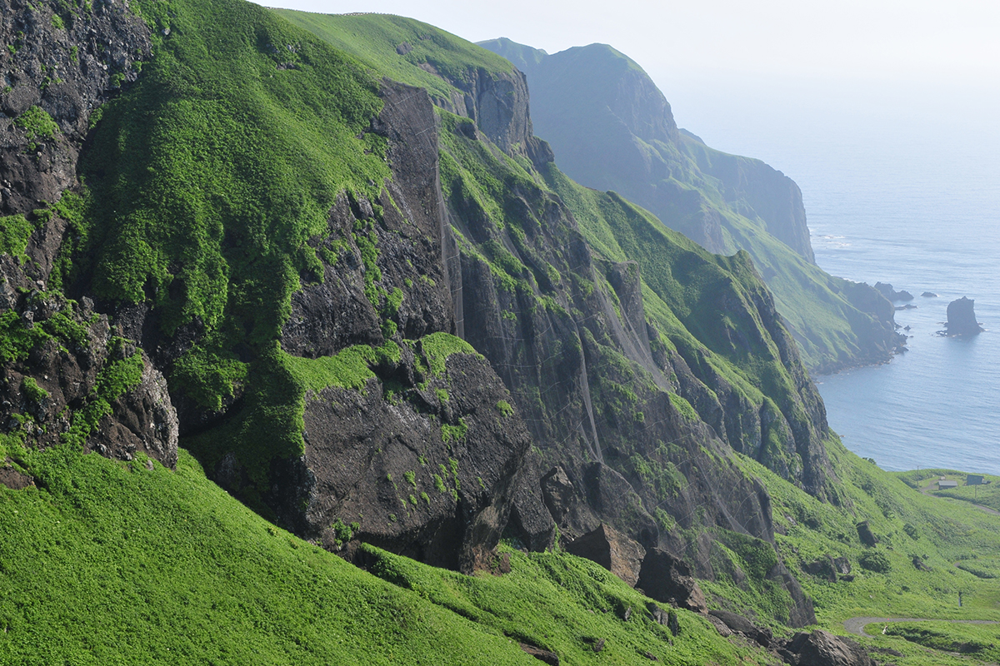
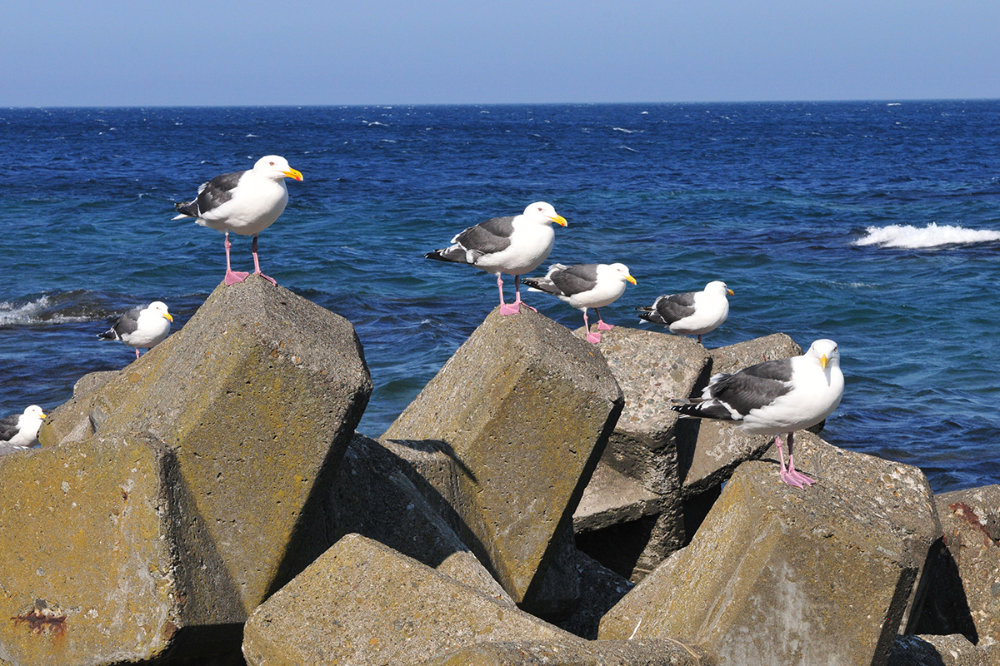
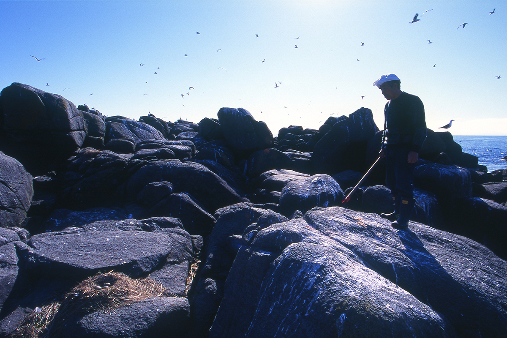
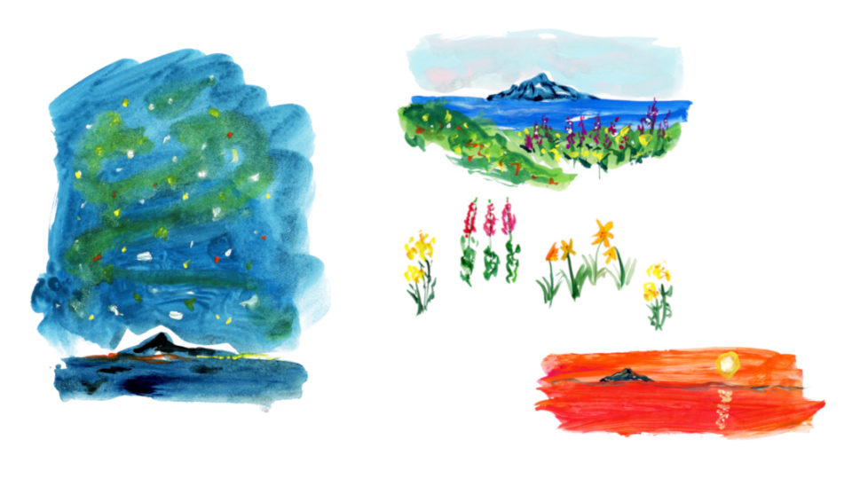
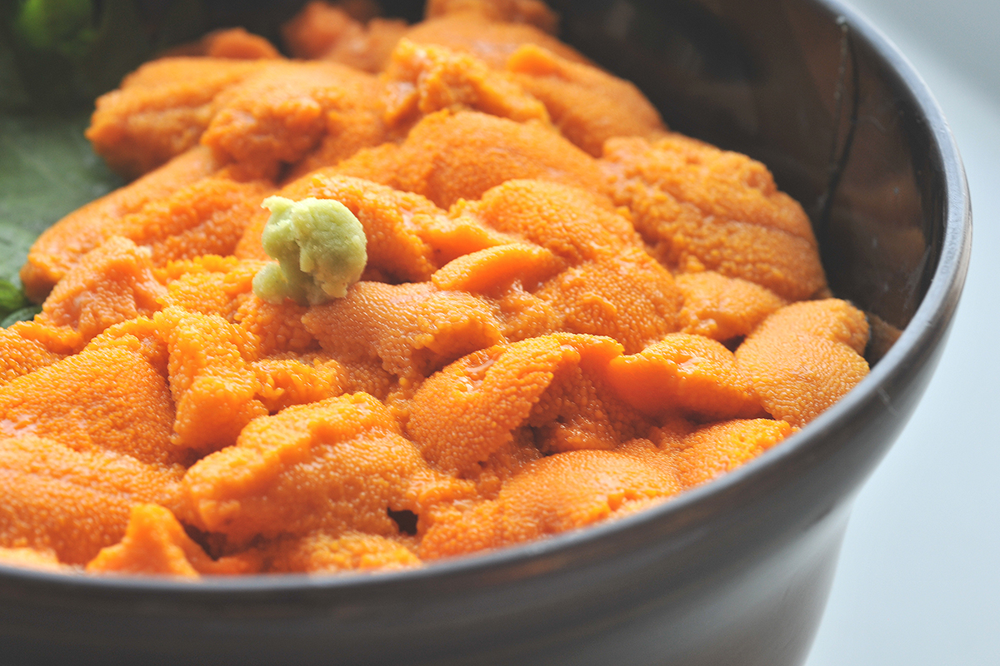

Префектура Хоккайдо · остров Рэбун · природа и морская кухня
Остров Рэбун: горные цветы у моря, крик чаек и морские ежи на самом севере Японии

Рэбун лежит у северной оконечности Хоккайдо, и среди обитаемых островов Японии севернее него нет ни одного. Летом здесь особенно чистый воздух, на невысоких холмах цветут растения, которые на главном острове встречаются только в высоких горах, а летом почти в каждом кафе подают свежих морских ежей.
Остров
Самый северный из обитаемых
Рэбун это самый северный остров Хоккайдо и самый северный обитаемый остров страны. Знаток японских островов, фотограф, который за 26 лет высадился на все 430 с лишним обитаемых островов Японии, где можно сойти на берег, считает, что лучшее время для поездки сюда лето. Солнце светит всё ярче, воздух прозрачен, и природа видна во всей своей силе и красоте.
Паром приходит в порт Кафука на юго-востоке острова, и первое, что слышишь у причала, это чайки. Чернохвостых чаек японцы зовут «уминэко», морскими кошками, потому что они кричат «мяу, мяу». Этот крик слышен по всему острову, а потом ещё долго звучит в памяти как голос летнего Рэбуна.

Шеф-повар известного токийского ресторана, который сам ездит ко всем поставщикам своих продуктов, называет Рэбун «японской Исландией». Морской ветер и туманы создают здесь условия, как в высоких горах, и цветы, которые на главном острове растут лишь на высоте около 2000 метров, здесь видно после совсем небольшой прогулки. Остров когда-то заселили в основном переселенцы из Аомори, поэтому местный говор, по словам шефа, звучит почти как иностранный язык, хотя это японский.
Виды
Мыс Сукотон, Момодай-Нэкодай и мыс Горота
На северной оконечности острова стоит мыс Сукотон со знаком самой северной точки, и панорама оттуда обязательна для каждого гостя. Но особенно любят смотровую площадку Момодай-Нэкодай, до которой можно дойти пешком от порта Кафука. С неё видны сразу две скалы: Момоива, похожая на персик, и Нэкоива, которая напоминает сидящую кошку, повёрнутую к зрителю спиной.
Недалеко от Сукотона лежит мыс Горота. Это владения чаек: в сезон гнездования над ним кружат птицы.

На севере острова есть ещё смотровая площадка Тодо-сима. С неё видно одноимённый необитаемый остров Тодо-сима, «остров сивучей»: когда-то на этих морских животных здесь охотились.
Цветы
Высокогорные растения у самого моря
Рэбун лежит так далеко на севере, что высокогорные цветы растут здесь почти у самого моря. Многие из них, например рэбунский мытник и ветреницу нарциссоцветковую, можно увидеть на тропе от мыса Сукотон до мыса Сукай. На юге острова, вдоль лесной дороги Рэбун, растёт рэбунский эдельвейс, родственник альпийского.
Пешие маршруты здесь на любой вкус: длинные занимают два-три часа, короткие около получаса. Шеф советует захватить куртку: когда дует ветер, бывает прохладно даже летом.
Три дня
Остров глазами шефа
Шеф бывает на Рэбуне у поставщиков и считает его одним из лучших мест для летней поездки. Его план рассчитан на три дня.
В первый день он сразу после парома заселяется в рёкан. Хозяин его любимого рёкана когда-то возглавлял туристическую ассоциацию острова и руководит компанией по переработке морепродуктов, поэтому лучший улов сезона попадает на стол, минуя рынок. Шеф отдыхает в горячем источнике и ждёт ужина: летние рэбунские морские ежи и другие дары моря Хоккайдо, по его словам, просто великолепны.
На второй день он встаёт затемно и идёт встречать рассвет на невысокий холм: подняться туда можно и в кроссовках. Обедать шеф советует в ресторане «Кайсэн-докоро Кафука», который держит рыболовный кооператив. Здесь он берёт «тян-тян хоккэ», блюдо из терпуга. Днём можно доехать до смотровой площадки Тодо-сима и съесть мороженое с комбу в порту неподалёку. Остров небольшой, и за один день можно увидеть и восход, и закат: если повезёт, солнце сядет в море у западного берега. Ночью шеф советует обязательно выйти смотреть на звёзды: лишнего света здесь нет, и небо очень красивое.

Утром третьего дня стоит поехать на запад и посмотреть, как добывают комбу: за работой можно наблюдать прямо с пляжа. Здешнюю ламинарию называют «Романе-Конти среди комбу», и шеф использует её на своей кухне. А где вкусная комбу, там вкусные и морские ежи: они ею питаются.
«Кайсэн-докоро Кафука»
- Адрес
- префектура Хоккайдо, уезд Рэбун, Рэбун, Кафука-мура, Тоннаи, 558-1
- Телефон
- +81 163-86-1228
- Часы работы
- 11:00–15:00 (последний заказ 14:00), 17:00–21:00 (последний заказ 20:00)
- Выходные
- вечер второго и четвёртого вторника месяца
Смотровая площадка Тодо-сима
- Адрес
- префектура Хоккайдо, уезд Рэбун, Рэбун, Фунадомари-мура
Вкус
Морские ежи летом
Лето на Рэбуне это сезон морских ежей. С июня по август, если год обычный, свежий донбури с морскими ежами подают почти везде на острове, где можно поесть.

Фотограф советует три вещи: полюбоваться природой острова с площадки Момодай-Нэкодай, поискать рэбунский эдельвейс у лесной дороги Рэбун и летом есть только что выловленных морских ежей.
Остров Рэбун
- Как добраться
- паром Heartland Ferry из порта Вакканай до порта Кафука около 1 часа 55 минут, 2–3 рейса в день; из порта Осидомари на острове Рисири до порта Кафука около 45 минут, 1–2 рейса в день (данные 2023 года)
- Телефон
- +81 163-86-2655 (туристический информационный центр острова Рэбун)
В 2023 году на острове жили 2296 человек. Его площадь 81,33 квадратного километра, а длина береговой линии 72 километра.
Фото: Ёдзи Като.